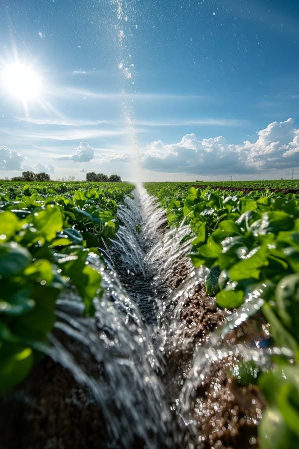

¿Qué es la composta?
La composta es un proceso natural de descomposición de residuos orgánicos que genera un fertilizante natural ideal para la agricultura y jardinerÃa. Reduce basura, mejora el suelo y apoya al medio ambiente.


La composta es un proceso natural de descomposición de residuos orgánicos que genera un fertilizante natural ideal para la agricultura y jardinerÃa. Reduce basura, mejora el suelo y apoya al medio ambiente.
| Beneficio | Descripción | Imagen |
|---|---|---|
| Reduce residuos | Disminuye la cantidad de basura en casa. |  |
| Enriquece el suelo | Mejora la calidad del suelo con nutrientes naturales. |  |
| Ecoamigable | Contribuye al cuidado del medio ambiente y reduce gases contaminantes. |  |
| Ahorro económico | Evita comprar fertilizantes quÃmicos costosos. |  |


Puedes utilizar la composta en macetas, jardines, huertos urbanos o en cultivos más grandes. Solo esparce una capa sobre la tierra y mézclala ligeramente. Es ideal para plantas, flores, árboles frutales y hortalizas.

Fina – Ideal para macetas ($50)
Gruesa – Perfecta para huertos ($60)
Mixta – Todo uso ($45)
Composta casera 100% orgánica lista para usar en huertos, jardines o macetas.

Te enseñamos cómo iniciar tu composta en casa o cómo aprovechar la que ya compraste.
Incluyen composta + semillas + macetas biodegradables para empezar tu huerto urbano.

Enviamos tu pedido directo a tu casa en Donato Guerra y alrededores.


Depende del tipo de planta, pero una vez al mes es suficiente en la mayorÃa de los casos.
No contamina, es más económico y mejora el suelo de forma sostenible.
SÃ, es perfecta para macetas en casa o en oficina.